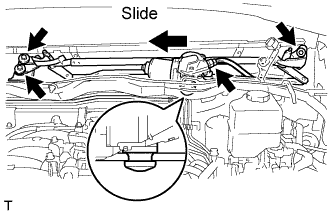
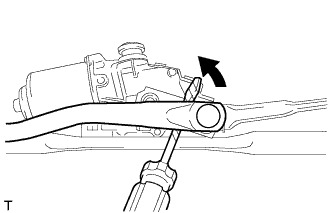
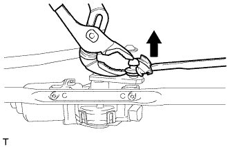

FRONT WIPER MOTOR > REMOVAL |
| 1. DISCONNECT CABLE FROM NEGATIVE BATTERY TERMINAL |
| 2. REMOVE UPPER RADIATOR SUPPORT SEAL |
Remove the 7 clips and radiator support seal.

| 3. REMOVE FRONT FENDER MAIN SEAL LH |
 |
Using a clip remover, detach the 3 clips and remove the fender main seal.
| 4. REMOVE FRONT FENDER MAIN SEAL RH |
| 5. REMOVE FRONT WIPER ARM LH |
Remove the nut, wiper arm and blade.
| 6. REMOVE FRONT WIPER ARM RH |
Remove the nut, wiper arm and blade.
| 7. REMOVE HOOD TO COWL TOP SEAL |
 |
Using a clip remover, detach the 12 clips, 4 clamps and remove the hood to cowl top seal.
| 8. REMOVE COWL TOP VENTILATOR LOUVER SUB-ASSEMBLY |
 |
Remove the washer hose.
 |
Remove the 2 clips.
Detach the 17 claws and remove the cowl top ventilator louver sub-assembly.
| 9. REMOVE WINDSHIELD WIPER LINK ASSEMBLY |
 |
Disconnect the connector. Then detach the clamp and remove the wire harness from the cowl top panel.
Remove the 3 bolts and slide the link to disconnect the connection as shown in the illustration to remove the wiper link.
| 10. REMOVE WINDSHIELD WIPER MOTOR ASSEMBLY |
 |
Detach the clamp and remove the wiper motor cover.
 |
Using a screwdriver with the tip wrapped with protective tape, disconnect the rod of the windshield wiper link assembly from the crank arm pivot of the windshield wiper motor assembly as shown in the illustration.
 |
Using a pair of water pump pliers, pull back the boot, taking care not to damage it, and remove the wiper arm from the crank arm pivot as shown in the illustration.
 |
Using a T30 "TORX" socket, remove the 2 screws and wiper motor.